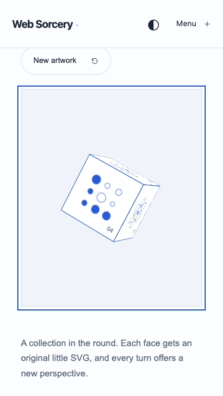
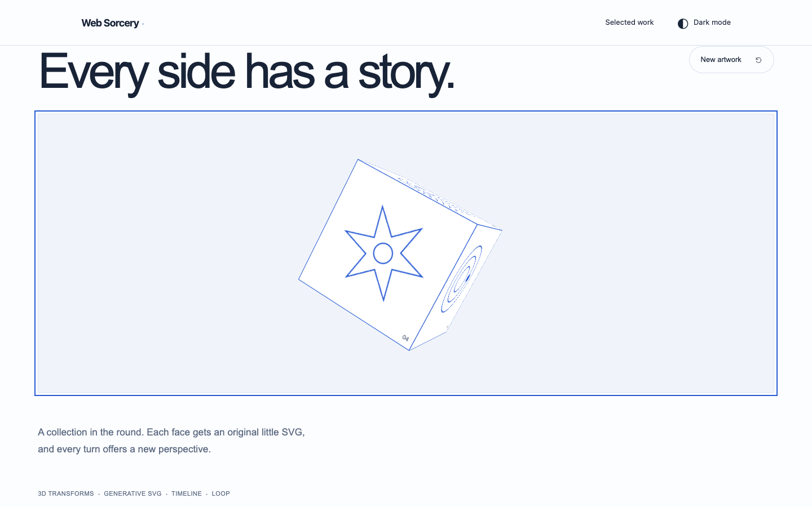
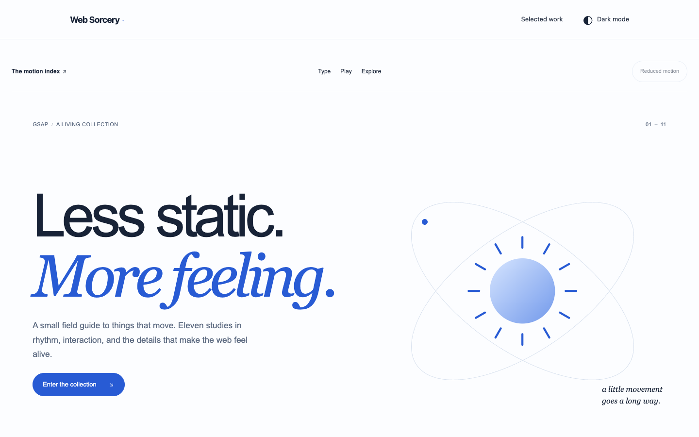

Let's work on motion-cube. It should be draggable, so user can rotate it with the mouse
Add direct mouse rotation to the existing CSS 3D cube, preserving GSAP, artwork, layout and lifecycle.
{
"brief": "Let's work on motion-cube. It should be draggable, so user can rotate it with the mouse",
"container": "#motion-cube",
"inputs": [
{
"file": "src/scripts/modules/gsap-showcase.js",
"type": "JavaScript",
"bytesBefore": 39345,
"use": "Preserve GSAP rotation and lifecycle; add pointer and keyboard input."
},
{
"file": "src/templates/partials/gsap/showcase.njk",
"type": "Nunjucks",
"bytesBefore": 20123,
"use": "Make the cube stage keyboard-focusable and describe interaction."
},
{
"file": "src/scss/components/_gsap-showcase.scss",
"type": "SCSS",
"bytesBefore": 18427,
"use": "Add grab cursors, touch handling, and a focus outline."
}
],
"technology": "Existing GSAP and CSS 3D transforms; no WebGL is needed.",
"assumptions": [
"The first user rotation stops automatic spinning until the showcase remounts.",
"Keep the orientation on release, without inertia.",
"Support touch dragging and arrow keys in addition to mouse dragging.",
"Explicit user input remains available with reduced motion; automatic spinning is disabled."
]
}
The existing initShowcase / initCube integration owns events and animation cleanup. CUBE_CONFIG sets drag sensitivity and keyboard step. Pointer capture rotates from the orientation at pointerdown; the first explicit interaction pauses the existing twenty-second, four-segment automatic timeline. The loop observer cannot restart it after user control. No inertia or automatic reset is applied. The CSS perspective, responsive sizes, and generative SVG faces are preserved. Reduced motion disables autonomous rotation while allowing deliberate input. Arrow keys and a visible focus outline provide keyboard access.
const CUBE_CONFIG = {
dragDegreesPerPixel: 0.5, // Rotation sensitivity in CSS pixels.
keyboardStep: 15, // Degrees per arrow-key press.
};
const takeControl = () => {
manual = true;
rotation?.pause();
};
on(cube, "pointerdown", (event) => {
if (!event.isPrimary || event.button !== 0 || drag) return;
takeControl();
drag = {
id: event.pointerId,
x: event.clientX,
y: event.clientY,
rotationX: Number(gsap.getProperty(cube, "rotationX")),
rotationY: Number(gsap.getProperty(cube, "rotationY")),
};
cube.setPointerCapture(event.pointerId);
cube.classList.add("is-dragging");
stage.focus({ preventScroll: true });
event.preventDefault();
});
on(cube, "pointermove", (event) => {
if (!drag || event.pointerId !== drag.id) return;
// Use the current orientation as the origin to avoid a jump on grab.
gsap.set(cube, {
rotationX:
drag.rotationX -
(event.clientY - drag.y) * CUBE_CONFIG.dragDegreesPerPixel,
rotationY:
drag.rotationY +
(event.clientX - drag.x) * CUBE_CONFIG.dragDegreesPerPixel,
});
});
const endDrag = (event) => {
if (!drag || event.pointerId !== drag.id) return;
const pointerId = drag.id;
drag = null;
cube.classList.remove("is-dragging");
if (cube.hasPointerCapture(pointerId))
cube.releasePointerCapture(pointerId);
};
["pointerup", "pointercancel", "lostpointercapture"].forEach((type) =>
on(cube, type, endDrag),
);
python3 -m http.server 8080 # Open http://localhost:8080/gsap-animations.html#motion-cube npm run dev npm run build
CUBE_CONFIG.dragDegreesPerPixel defaults to 0.5 degrees per CSS pixel; keyboardStep defaults to 15 degrees. The index.html in this folder links to the existing integrated page. The README describes embedding through the existing showcase rather than adding a second mount API.
JavaScript syntax checks and the production Vite build passed. Browser checks passed at 375×667, 768×1024 and 1440×900: dragging changes rotation at the configured rate, releasing holds the orientation, and arrow keys rotate by the configured step. Reduced motion remains still without input. No console errors or warnings were observed. Screenshots and machine-readable results are in checks/.



Pointer checks isolate the cube by removing the unrelated Soldier overlay from the test fixture. In normal use, a visible Soldier overlapping the cube retains pointer priority. Physical touch hardware, automated performance profiling, and active-drag cleanup were not independently tested. Existing showcase cleanup owns listeners and pointer capture.